G3W Guide¶
Creating Your Instance¶
After your service has finished setting up, you will be redirected to the Hosted Services page of the GeoSpatial Hosting Dashboard. Here, you can view all your purchased services.
To access your login credentials:
- Click the Get Credentials button under your hosted service.
- Your credentials will be copied to your clipboard.
Hint: Paste and save your credentials in a secure location.
- Click the application name you selected for your G3W instance to open it.
To delete a hosted service:
- Click the three dots (⋮) in the corner of the hosted service pane.
- From the dropdown menu, select Delete.
⚠️ IMPORTANT Deleting a hosted service is permanent. All associated data will be irreversibly removed with no option for recovery.
First Log In & Setting Your Password¶
To access the Administration Panel, log in using the credentials generated on the GeoSpatial Hosting Dashboard:
- Click Login in the portal side panel.
- Enter your credentials:
- Username:
admin - Password: (paste your generated password)
- Click Sign In.
Changing your initial password (recommended):
- Click your username in the top bar and select Change password.
- Enter your current password and your new password twice.
- Click Change password to save.
Hint: Choose a strong, unique password and store it securely.
Quickstart: 5-Minute Tutorial¶
Overview¶
This tutorial is centered around a QGIS project designed to manage a layer representing a collection of buildings within a specific geographic area.
Beyond spatial data, the project also handles a wide range of attribute information, including maintenance records, using a 1:n relational structure to allow each building to be associated with multiple maintenance entries.
Throughout the tutorial, you will gain practical skills in:
- Customizing the graphic and functional elements of the base QGIS project.
- Publishing the project as a WebGIS service using G3W-SUITE.
- Creating custom search tools for efficient data exploration.
- Integrating interactive charts using the DataPlotly plugin.
-
Enabling online editing, including:
- Custom form layouts
- Specialized widgets for improved user interaction
Note: This tutorial aims to demonstrate how a real-world GIS project can be fully managed through G3W-SUITE and QGIS.
Data Preperation¶
This tutorial is based on a modified dataset and QGIS 3.34.x LTR project from the official G3W-SUITE documentation website. Download the Tutorial Data using the link below:
Note: You can download the original data from the Download Demo Data section of the G3W-SUITE Documentation
Data Preperation Overview¶
The Tutorial_Data_G3WSUITE folder contains images and the following three subdirectories:
📁 projects/
- Contains the QGIS project file:
g3w_tutorial.qgs - The project is fully optimized for this tutorial.
📁 plots/
- Contains plot definitions created using the DataPlotly plugin, saved in
.xmlformat.
📁 project_data/spatialite/
- Contains the SpatiaLite database:
g3w_tutorial.sqlite - This database stores the core data used in the project.
Inside the g3w_tutorial.sqlite file, you’ll find the following layers:
| Layer Name | Type | Description |
|---|---|---|
buildings |
Polygon | Main reference layer for editing building features |
maintenance_works |
Table | Records of maintenance activities linked to individual buildings |
buildings_rating |
Table | Annual ratings or assessments of buildings |
roads |
Line | Road network used to assign addresses to buildings |
work_areas |
Polygon | Work zone boundaries used to define geo-constraints |
type_subtype |
Table | Lookup table for building type and subtype values |
The QGIS project (based on QGIS 3.34.x LTR) is pre-configured with the following features:
-
Categorized symbology for the:
buildingslayer based on thetypefield.
-
1:n relationships defined between:
buildings↔maintenance_worksbuildings↔buildings_rating
-
Pre-built query forms for:
buildingslayermaintenance_workstable
-
Predefined editing widgets for:
buildings,maintenance_works, andbuildings_ratingattributes
-
Four print layouts:
- Two standard layout templates
- Two atlas layout templates using features from the buildings layer
Exercise¶
Before you can publish your QGIS project to the WebGIS platform, there are two essential steps you MUST complete:
-
Update the Project Title
This title will be used as the WebGIS service ID. If not updated, your service may be misidentified or conflict with existing services.
-
Upload the SpatiaLite database to the File Manager
This ensures that G3W-SUITE can access the data sources used in your QGIS project. Without it, layers may not display correctly.
Steps to update the project title:
-
Open your QGIS project.
-
Go to the Project menu.
-
Select Properties...
-
Under the General tab, locate the Project Title field.
-
Enter a unique and descriptive title for your project.
-
Click OK to apply the changes.
Make sure the title:
- Reflects the content or purpose of your project.
- Does not contain special characters or excessive spacing.
- Is short but specific enough to identify the service in the WebGIS environment.
Note: For more details, refer to the QGIS: project settings section of the official G3W documentation.
Uploading the SpatiaLite database to the File Manager
-
Open a web browser and navigate to:
-
Log in to G3W-SUITE using your administrator credentials.
- Username:
admin - Password:
*generate from dashboard*
Hint: Need help finding your credentials? See the section: Using the Kartoza GeoSpatialHosting Dashboard
- Username:
-
Once authenticated, navigate to the Administration Panel
Hint: Need help navigating to the Administration Panel? Refer to the Administration Panel section.
-
In the top-bar, click the Gear icon.
-
Under File Manager, select Files.
 Image credit: G3W-SUITE
Image credit: G3W-SUITE -
From the Home folder (or the left-hand panel), navigate to the
project_datafolder. -
In the top navigation bar, click the New Folder button.
 Image credit: G3W-SUITE
Image credit: G3W-SUITE -
Name your new folder
spatialiteand click Create Folder.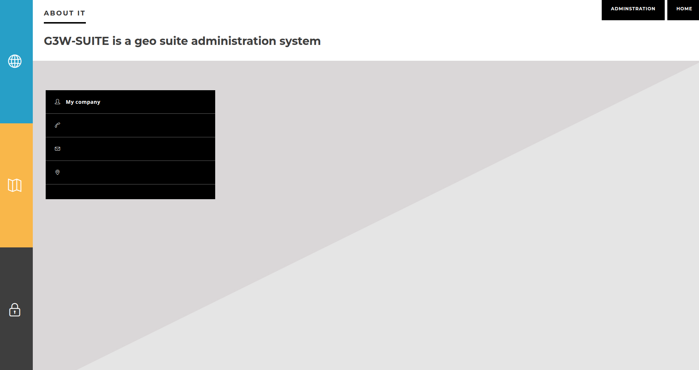Image credit: G3W-SUITENote: Make sure the file path matches the one specified in your QGIS project.
-
Open your newly created folder, then in the top bar, click Upload.
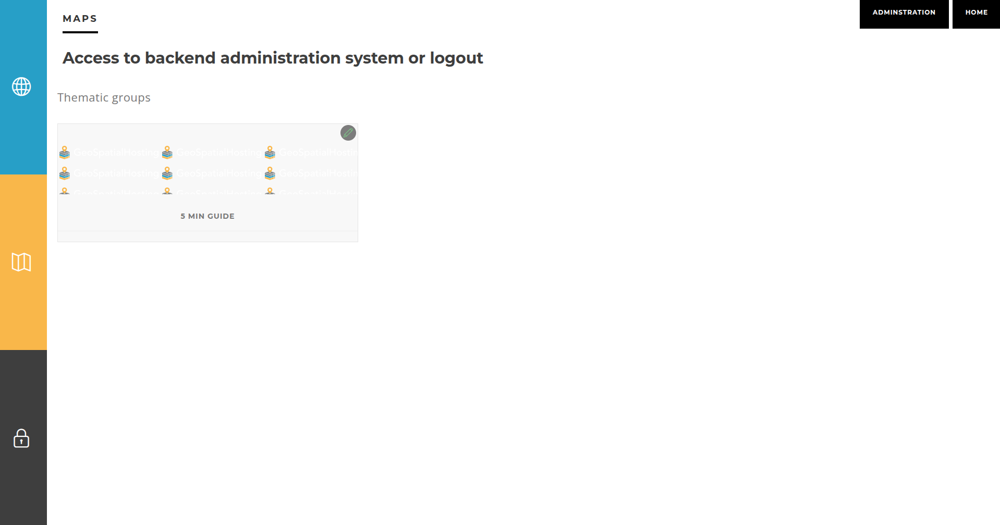Image credit: G3W-SUITE -
Click inside the file drop area to open your system file explorer.
-
Select the
g3w_tutorial.sqlitefile from theproject_data -> spatialitefolder and click Upload.Image credit: G3W-SUITE
You’ve successfully uploaded your SpatiaLite database to the File Manager and can now proceed with publishing your QGIS project.
Publishing a QGIS Project¶
Once you have updated the project title (to define a unique WebGIS service ID), and uploaded your SpatiaLite database to the correct folder in the File Manager, you’re ready to publish your QGIS project as a WebGIS service in G3W-SUITE.
Publishing a QGIS Project Overview¶
Publishing a QGIS project is done through the Dashboard, which provides access to:
- Your assigned Cartographic- and Macro Cartographic Groups
- Additional module menus for managing services and settings
To publish a project, you’ll need to:
-
Create a Cartographic Macro Group
-
Create a Cartographic Group
-
Complete a series of project form fields, organized as follows:
| Section | Field | Description |
|---|---|---|
| QGIS Project | QGIS prioject file | Upload the .qgz or .qgs file representing your QGIS project. |
| ACL Users | Viewer users | Select individual users allowed to view the WebGIS. Use AnonymousUser to allow public access. |
| Viewer user groups | Assign user groups that can view the WebGIS content. | |
| Default Base Layer | Base layer | Choose a default base layer to display at startup (optional, limited to those defined for the group). |
| Description Data | Public title | Title shown in the WebGIS interface. Falls back to project title or filename if left blank. |
| Description | A short description of the project shown in the portal. | |
| Thumbnail (Logo) | Image/logo used to represent the project in the list view. | |
| URL alias | Human-readable URL path for accessing the WebGIS. |
Note: Fields marked with an asterisk (*) are required.
In the Options and Actions section, you can toggle several key features that influence how the WebGIS service behaves at runtime:
| Option | Description |
|---|---|
| Tab's TOC active as default | Open the TOC tab (Layers, Base Layers, etc.) by default when the client loads. |
| Tab's TOC layer initial status | Set whether the layers in the TOC start as collapsed or expanded. |
| Map themes list initial status | Set whether the map theme list starts as collapsed or expanded. |
| Legend position rendering | Choose whether the legend appears in a separate tab or within the TOC panel. |
| WMS GetMap image format | Specify the preferred image format for WMS GetMap requests. |
| Max feature to get for query | Set the maximum number of features returned from a query. |
| Query control mode | Define whether queries allow single or multiple selections. |
| Query by bbox control mode | Set bounding box queries to single or multiple mode. |
| Query by polygon control mode | Set polygon-based queries to single or multiple mode. |
| Geocoding providers | Configure which geocoding services are available for address-based searches. |
Now that you're familiar with the workflow and the publishing interface key components, let’s apply this knowledge.
Publishing a QGIS Project Exercise¶
Creating a Macro Group
Follow the steps below to create a Macro Cartographic Group in G3W-SUITE:
-
From the Administration Panel, in the left-side navigation menu, click Dashboard.
 Image credit: G3W-SUITE
Image credit: G3W-SUITE -
Within the Dashboard, locate the light blue Groups box.
-
Click Show to display the list of existing Cartographic Groups.
Image credit: G3W-SUITE -
In the left navigation bar under Macro Cartographic Groups, click Add MACRO Group
 Image credit: G3W-SUITE
Image credit: G3W-SUITE -
On the Macro Group creation page, under the General Data section, complete the following fields:
- Identification name:
G3W Tutorial Macro Group - Title:
G3W Tutorial Macro Group
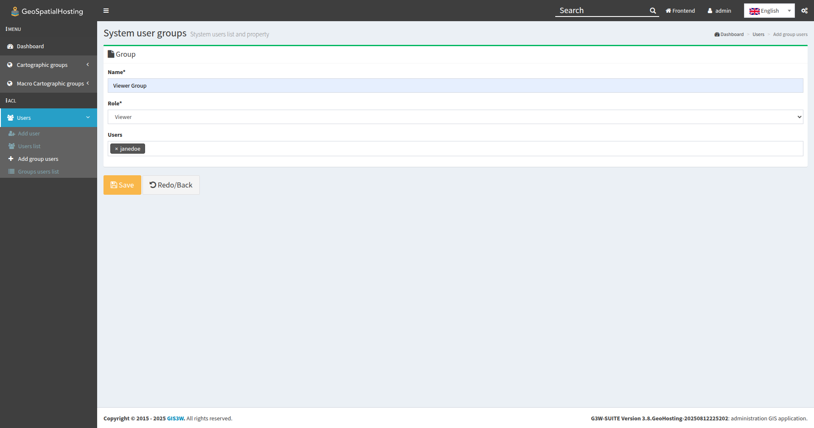Image credit: G3W-SUITE - Identification name:
-
In the Logo Image section, upload the
image_macro_groupPNG located in theTutorial_Data_G3WSUITEfolder. -
Once all fields are complete, click Save to finalize the creation of your Macro Group.

Creating a Group
Follow the steps below to create a Cartographic Group within G3W-SUITE:
-
In the left-side navigation bar, under Cartographic Groups, click on Add Group
 Image credit: G3W-SUITE
Image credit: G3W-SUITE -
On the Group Creation page, under the General Data section, fill out the following fields:
- Name:
G3W Tutorial Group - Title:
G3W Tutorial Group
Image credit: G3W-SUITE - Name:
-
In the MACRO Groups section, select the previously created group:
G3W Tutorial Macro Group -
Under GEO Data, set the Coordinate Reference System (CRS) to
EPSG 3857.Hint: Not sure about your project's CRS? In QGIS, go to Project → Properties → General to confirm the EPSG code.
 Image credit: G3W-SUITE
Image credit: G3W-SUITE -
In the Base Layers and Map default features section, select OSM (OpenStreetMap) as your baselayer.
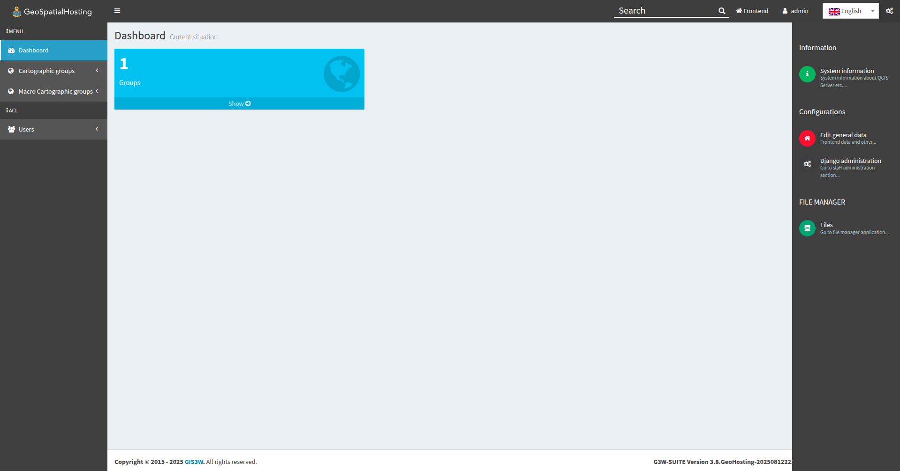Image credit: G3W-SUITE -
In the Logo/Picture section, upload the
image_groupPNG located in theTutorial_Data_G3WSUITEfolder.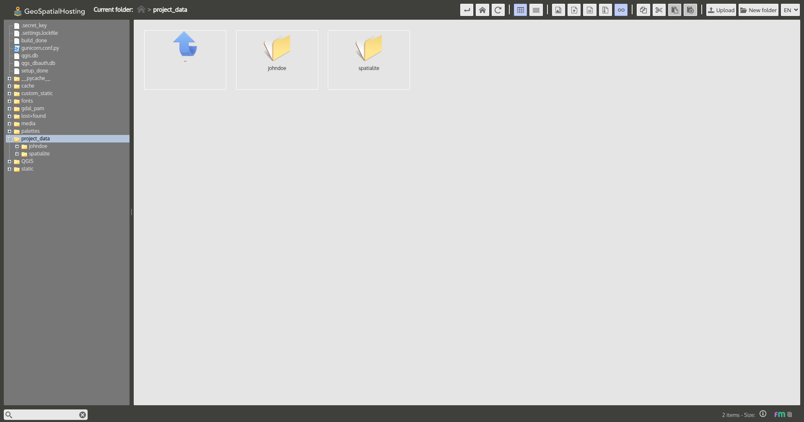Image credit: G3W-SUITE -
Once all details are complete, click the Save button to finalize your group setup.
Adding a QGIS Project
-
In the Cartographic Groups tab, under
Project Group, click the Add New Project button.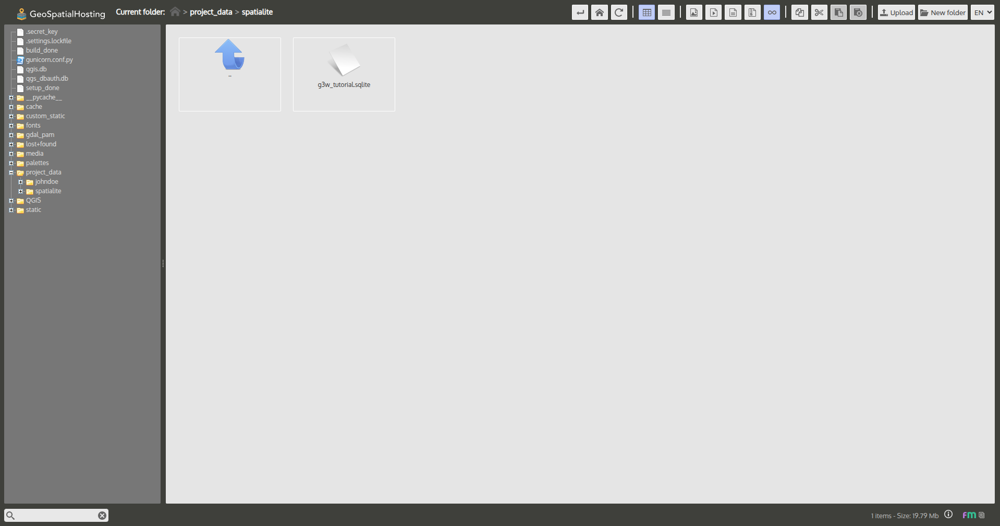Image credit: G3W-SUITE -
The New QGIS Project page opens.
-
Under the QGIS Project section, upload your
.qgzor.qgsfile from:Tutorial_Data_G3WSUITE → projects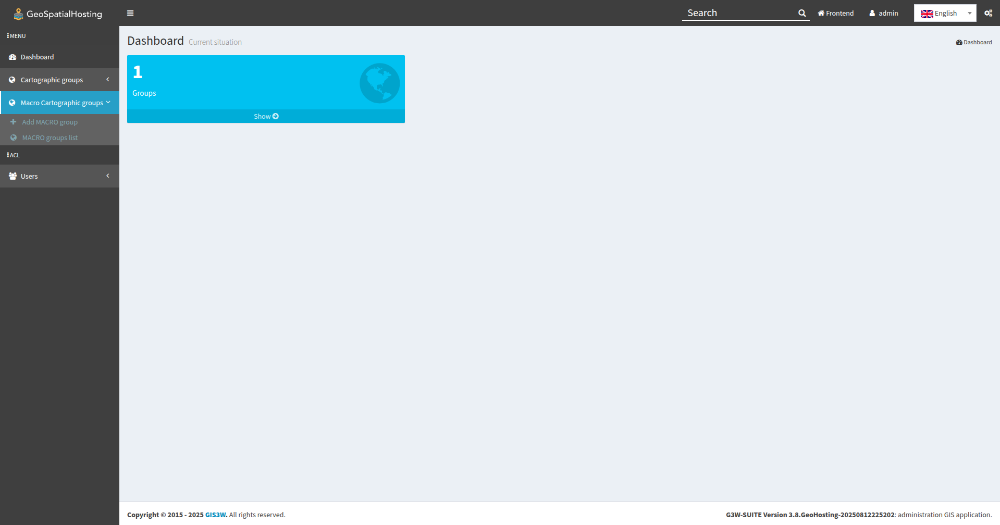Image credit: G3W-SUITE -
Under Descriptive Data, complete the following fields:
- Public Title:
G3W Tutorial Project - Thumbnail:
image_project
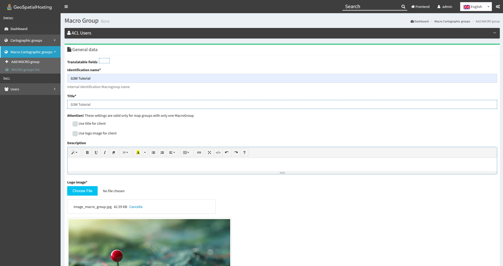Image credit: G3W-SUITE - Public Title:
-
Under Default Base Layer, choose OSM (OpenStreetMap).
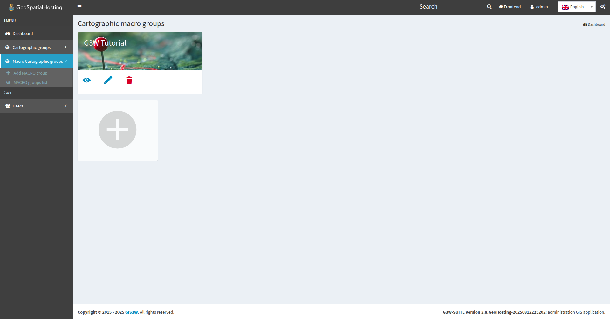Image credit: G3W-SUITE -
In the Options and Actions section, leave all settings at their default values.
 Image credit: G3W-SUITE
Image credit: G3W-SUITE -
Click the Save button.
Once successfully published, the project will appear in the WebGIS services list under the G3W Tutorial Group. You can click the View Map icon to launch and explore the live WebGIS.
Note: For more details, refer to the Publish the QGIS project as a WebGis service section of the official G3W documentation.
Updating the Published WebGIS Service¶
You can update both the graphic and functional elements of an existing WebGIS service in G3W-SUITE.
Updating the Published WebGIS Service Overview¶
To update a published WebGIS service:
-
Access the Project List by navigating to the list of projects under the appropriate Cartographic Group.
-
Edit the WebGIS Service by clicking the Edit icon next to the desired WebGIS service to upload a modified QGIS file and update configuration options.
From the WebGIS services list, you can manage a wide range of functionalities using tools associated with each project. This allows you to view, modify, and control individual project behavior. Below is a guide to the available tools and their functionality:
Excercise¶
Setting Up an Overview Map
You can define a panoramic overview map (mini-map) for your WebGIS group. This map appears in a corner of the main WebGIS interface and provides spatial context.
-
In the Cartographic Groups tab, under the
G3W Tutorial Group, click the Projects button.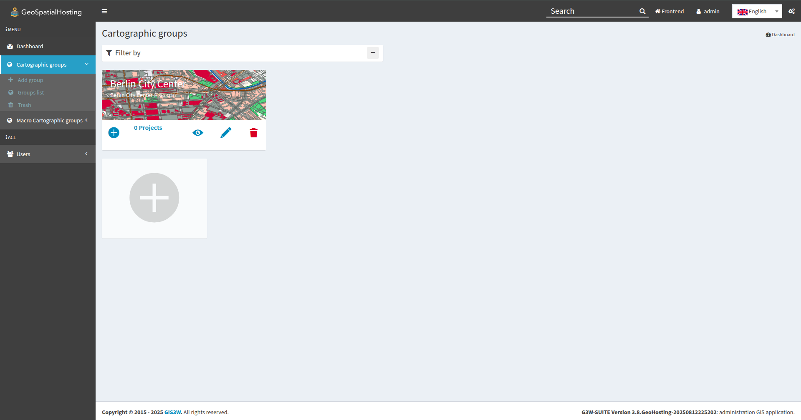Image credit: G3W-SUITE -
Locate the
Tutorial_G3WSUITEproject and check the box in the Panoramic column.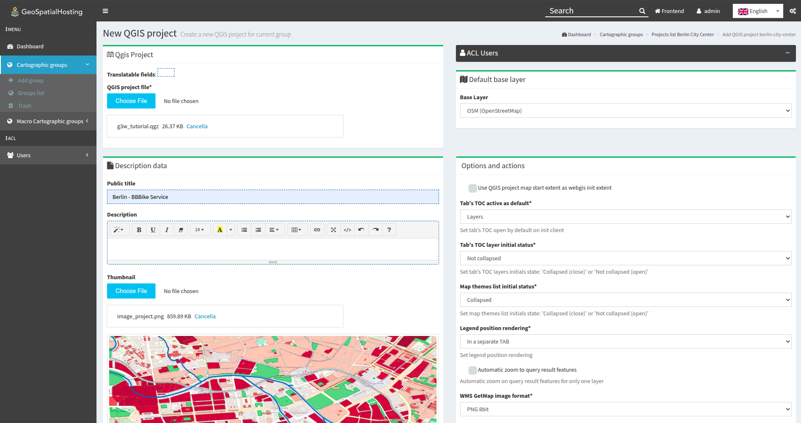Image credit: G3W-SUITE
Your updates will now be applied. Use the View Map icon from the project list to open the WebGIS to verify the updated configuration, including the newly defined Overview Map.
Note: For more details, refer to the Update/Manage WebGis services section of the official G3W documentation.
Activating Additional Functions¶
Once your project has been published, you can enhance your WebGIS service by enabling a variety of widgets and additional functions.
Activating Additional Functions Overview¶
By clicking the Layers icon you can access the list of geographic layers that make up the project. From this interface, you can configure various functional options that will be enabled in the cartographic client.
The Data tab contains several columns, including:
| Field | Description |
|---|---|
| Label | Alias set in the QGIS project |
| ID | Unique identifier (eye icon) used for parameterized URLs |
| Name | Layer name (file or DB table) |
| Type | Data source type (WMS, PostGIS, GDAL, etc.) |
| WMS External | Option to handle GetFeatureInfo responses outside QGIS Server |
| WFS | Indicates if the layer is available as WFS |
Note: WMS layers are handled directly by Django to speed up loading, bypassing QGIS Server.
Under the Actions column next to each layer, you’ll find a series of icons that allow you to manage its behavior and visibility:
Hint: Each action icon displays a number indicating how many related objects are configured.
The Download Capabilities column allows for the download of vector and raster data in the following formats:
| Format | Available For |
|---|---|
| SHP/GeoTIFF | Vector and raster layers |
| GPKG | All layers |
| XLS | All layers |
| CSV | All layers |
| GPX | Geographic layers |
| Attribute-level export for all |
The Visibility Capabilities column allows you to configure general visibility options (applies to all users):
| Option | Effect |
|---|---|
| Hide Attributes Table | Disables attribute table |
| Hide Legend | Disables legend display |
| Hide Layer TOC | Removes layer from TOC |
Hint: Try enabling these features and test them directly in your WebGIS interface.
Activating Additional Functions Exercise¶
Creating a Search Widget
By default, search widgets can be configured on individual vector layers using the fields from the associated attribute table. Each search widget is saved by referencing the layer’s unique identifiers.
This design enables reusability: once a search widget is created for a specific layer, it becomes available in any other project where that same layer is used.
-
From the Project List page, click the Layers icon next to the
Tutorial_G3WSUITEproject.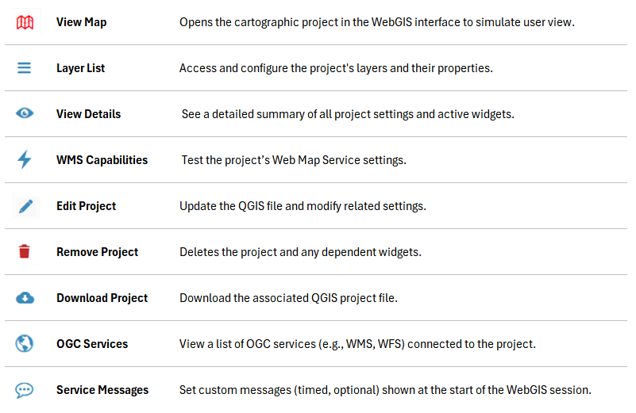Image credit: G3W-SUITE -
The QGIS Project Layers section will open displaying all layers included in the published QGIS project.
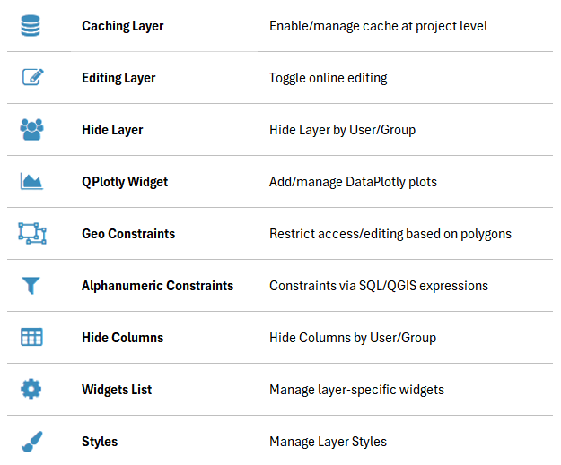Image credit: G3W-SUITE -
Next to the
buildingslayer, click the Widgets List icon. -
To create a new widget, click the Add New Widget button.
 Image credit: G3W-SUITE
Image credit: G3W-SUITE -
In the Widget Creation Form, configure the following:
- Type:
Search - Name:
Search Widget - Search Title:
Tutorial Search Widget
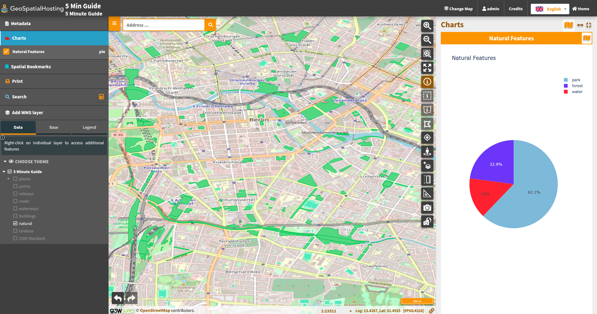Image credit: G3W-SUITE - Type:
-
In the Search Field Settings section, set the following:
- Field:
type - Widget:
SelectBox - Alias:
Building Type - Operator:
= (equal)
Hint: Use the Add button to define multiple search conditions.
Image credit: G3W-SUITE - Field:
-
Once finished, click OK to save.
The new search widget will now appear in the layer's widget list and will be automatically available in the WebGIS interface.
Creating a Plots Widget
The QPlotly widget enables users to view interactive plots, created using the DataPlotly QGIS plugin (developed by Matteo Ghetta), directly within the WebGIS cartographic client.
This module uses the Plotly library and supports plots saved as .xml files. Because each plot is linked to a specific layer in the QGIS project, it allows consistent reuse of the same plots across different WebGIS services, as long as the related layer is present.
Note: The plot title, defined in the DataPlotly plugin, acts as the unique identifier.
Plots can be filtered by:
-
Map Extent: Based on visible features
-
Feature Selection: Based on selected features
These filters also apply to related plots based on 1:N relationships. As users pan or zoom on the map, all related plots automatically update to reflect the visible extent.
If selection-based filtering is enabled, it is automatically applied to all linked plots associated with the same layer. Users will see clear messages on each chart indicating which filters are currently active.
When a layer has 1:N relationships with other tables that contain active plots, users can access those plots by querying the parent layer and clicking the Show Relation Charts icon. This feature enhances data exploration by allowing users to interact with and analyze related datasets directly within the WebGIS client.
-
From the QGIS Project Layers list, next to the
buildingslayer, click the Qplotly Widgets icon.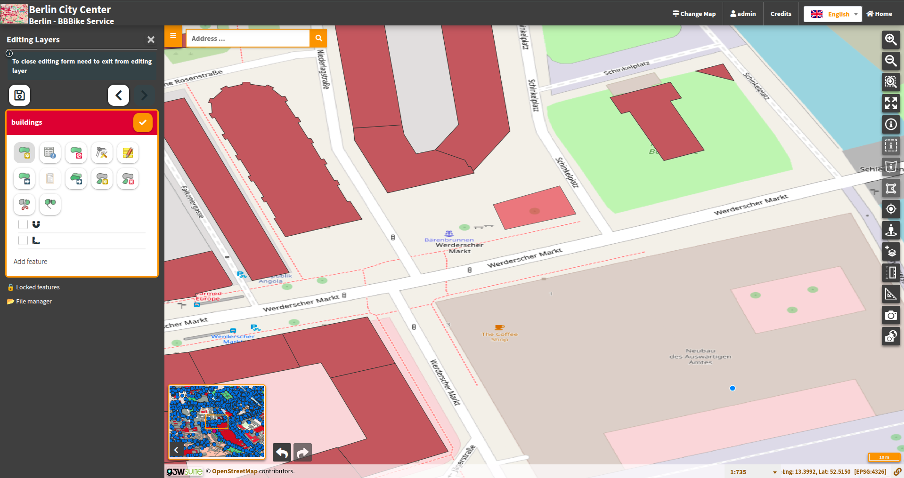Image credit: G3W-SUITE -
To create a new widget, click the New Qplotly Widget button.
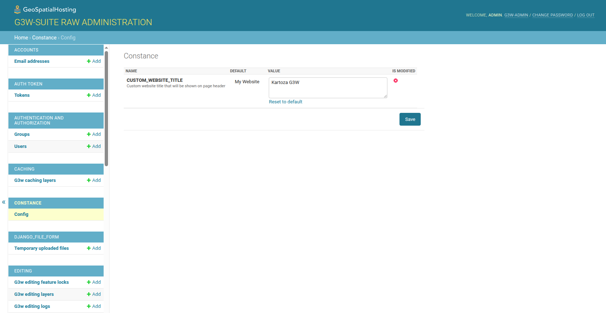Image credit: G3W-SUITE -
In the New Qplotly Widget pop-up, click inside the upload box to open your file explorer.
-
Navigate to
Tutorial_Data_G3WSUITE -> plotsand select:qplotly_type-distribution. -
Click Ok.
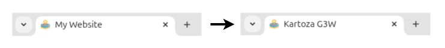Image credit: G3W-SUITE
The new chart widget will now appear in the layer's Qplotly Widget List and will be automatically available in the WebGIS interface.
Note: For more details, refer to the Widgets management section of the official G3W documentation.
Editing Online¶
Forms and editing widgets have already been configured in the tutorial project for both the buildings geometric layer and the related interventions_maintenance attribute table.
Editing Online Overview¶
Editing settings are defined partly in the QGIS project (e.g. form layout), and partly through the G3W-SUITE Administration panel (e.g. user permissions). The editing module supports direct edits on both geometric and attribute-only layers, as well as layers in 1:N or N:M (limited) relationships.
Hint: In QGIS, the form layout and widgets for each layer’s attributes are configured under:
Layer Properties→Attributes Form.
G3W-SUITE supports multi-user editing through a feature locking system.
When a user activates editing in the WebGIS interface, all features visible in the current map view become locked to that user. Other users will be restricted from editing these features until the original user exits editing mode.
Note: Multi-user editing should only be enabled on layers stored in a GeoDatabase — not on file-based layers (e.g. shapefiles).
Editing Online Exercise¶
Activating Editing on a WebGIS Layer
-
In the QGIS Project Layers list, locate the
buildingslayer and click the Editing Layer icon.Image credit: G3W-SUITE -
In the Activation layer_editing dialog, you can:
- Enable or disable editing capabilities
- Set the minimum scale for editing
- Define which user groups are permitted to edit this layer
-
Under Check on uncheck to active/deactive editing layer capabilities, check the corresponding checkbox.
-
Fill in the following fields:
- Scale:
2500 - User Groups Editing Data Field:
user
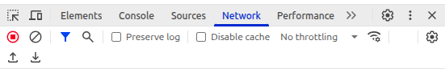Image credit: G3W-SUITE - Scale:
-
Click OK
Once editing is enabled, a new Editing Layers menu becomes available in the WebGIS side panel.
Editing a WebGIS
Once activated, editing allows modifications to both geometry and attributes of the buildings layer and its related interventions.
-
In the QGIS Project Layers list, click Show Map.
-
In the left-hand panel, click Editing Layers
-
Click the Edit Layer icon next to the
Buildingslayer.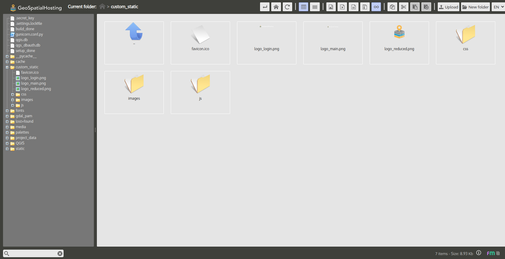Image credit: G3W-SUITE -
Zoom into an open area where no buildings exist.
Image credit: G3W-SUITE -
In the left-hand panel, click the Add Feature button.
Image credit: G3W-SUITE -
Draw a continuous shape on the basemap. Once finished, the Editing Attributes panel will opens.
 Image credit: G3W-SUITE
Image credit: G3W-SUITE -
Under the General Info tab, fill in:
NameType
-
Under the Technical Data tab, fill in:
Year of ConstructionHigh
-
At the bottom of the form, click Insert/Edit
-
In the left-hand panel, click the Save or Checkmark icon.
 Image credit: G3W-SUITE
Image credit: G3W-SUITE
Your new Buildings feature is now saved to the WebGIS.

Note: For more details, refer to the Editing on line section of the official G3W documentation.
Navigating the Dashboard¶
The home page serves as the main entry point to the platform. It includes a customizable welcome message and intuitive navigation menus that provide access to various functionalities.
Right-Side Panel Menu
This panel contains quick-access links:
- About It – view service-related information
- Maps – explore available WebGIS services
- Login – access additional services
About It¶
This section can display a short description and key contact details relevant to your organization or project.
Maps¶
G3W-SUITE organizes WebGIS services in hierarchical containers:
- Cartographic Macrogroups – top-level thematic categories
- Cartographic Groups – subcategories containing specific services
Browsing Maps:
- Click Maps in the panel.
- Available macrogroups appear under Thematic Groups.
- Select a macrogroup to view its associated Groups.
- Click a group to list individual WebGIS services.
Managing Users & Permissions¶
The Administration Panel is the control center for managing user accounts, groups, and access policies.
Accessing the Administration Panel¶
Once logged in, click the Backend button in the top-right corner, or use the Gear icon → Django Administration.
Top Bar Controls¶
- Frontend: Return to the public-facing portal
- Username: Access your profile or log out
- Language: Change interface language
- Gear icon:
- Edit General Data
- Django Administration
- Files (File Manager)
Left-Side Navigation Menu¶
Use the sidebar to navigate administration functions:
- Dashboard: Overview & quick links
- Macro Cartographic Groups: Create/manage thematic containers
- Cartographic Groups: Create/manage service groups
- Users: Create, edit, and delete user accounts; assign users to groups
Central Dashboard Area¶
The central panel displays:
- Dashboard Widget: High-level overview
- Quick Links: Direct access to Cartographic Groups, Macro Cartographic Groups, Users
- Status Panels: Counts of existing groups, users, and services
Integrating With Other Tools¶
Once your project is published, click the Layers icon to configure functional widgets for each layer:
Creating a Search Widget¶
- From QGIS Project Layers, click the Widgets List icon next to the
buildingslayer. - Click Add New Widget.
- In the Widget Creation Form, set:
- Type:
Search - Name:
Search Widget - Search Title:
Tutorial Search Widget - Under Search Field Settings, click Add and configure:
- Field:
type - Widget:
SelectBox - Alias:
Building Type - Operator:
= - Click OK.
Creating a Plots Widget¶
- From QGIS Project Layers, click the Qplotly Widgets icon next to the
buildingslayer. - Click New Qplotly Widget.
- In the pop-up, upload the plot definition (
.xml) from yourplots/folder:Tutorial_Data_G3WSUITE/plots/qplotly_type-distribution.xml. - Click OK.
Note: Search and plot widgets update dynamically based on map extent and feature selection.
Glossary of Terms¶
-
ACL (Access Control List) A mechanism for defining which users or groups have permission to view or manage specific services, modules, or data within G3W-SUITE.
-
Base Layer The default map layer (e.g., OSM) that loads when a WebGIS service is opened.
-
Cartographic Group A subcategory within a MacroGroup that holds individual WebGIS services or projects.
-
Cartographic MacroGroup A top-level thematic container in G3W-SUITE used to organize collections of related WebGIS services.
-
Feature Locking A multi-user editing mechanism that locks visible features to the active editor to prevent conflicts.
-
File Manager The interface in the Administration Panel for uploading and organizing service data files.
-
Front-End Geographic Portal The public-facing portal in G3W-SUITE for browsing thematic macrogroups, groups, and services.
-
G3W-ADMIN The administration module of G3W-SUITE, providing project management, ACL, OGC proxy, and REST API functionality.
-
G3W-CLIENT The cartographic web client module of G3W-SUITE, enabling visualization and interaction with published OGC services.
-
Geocoding Provider An external service configured in G3W-SUITE for address-based searches.
-
GetFeatureInfo A WMS operation to retrieve attribute information for features at a clicked map location.
-
Hosted Services Instances of G3W-SUITE provisioned via the Kartoza GeoSpatialHosting Dashboard.
-
Layer TOC The table of contents panel listing all layers in a WebGIS service.
-
OGC Proxy A component in G3W-ADMIN that forwards OGC service requests to QGIS Server.
-
OGC Services Web services conforming to Open Geospatial Consortium standards, such as WMS (Web Map Service) and WFS (Web Feature Service).
-
Panoramic Overview Map A mini-map view displayed in the corner of the WebGIS interface for spatial context.
-
REST API Server The backend API provided by G3W-ADMIN for programmatic access and integrations.
-
SpatiaLite An extension of SQLite that adds support for spatial/geographic data storage in a single file.
-
Thumbnail (Logo) A small image representing a WebGIS project in list views.
-
URL Alias A human-readable path segment used to access a WebGIS service (e.g.,
/g3w). -
WebGIS Service A QGIS project published as an OGC service (e.g., WMS/WFS) through G3W-SUITE.
-
Widgets Client-side tools configurable per layer in the cartographic client, such as:
- Search Widget: Enables attribute-based queries.
- Plots (QPlotly) Widget: Embeds interactive Plotly charts based on DataPlotly definitions.